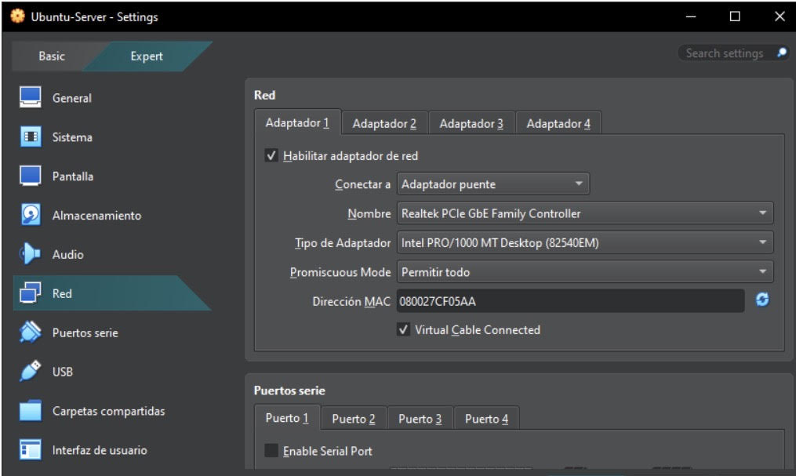
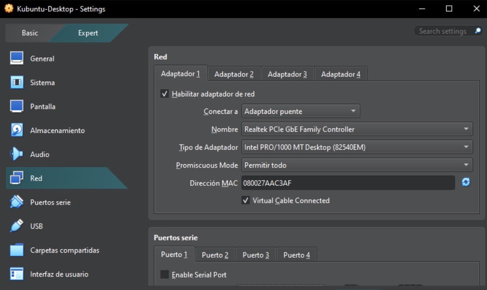
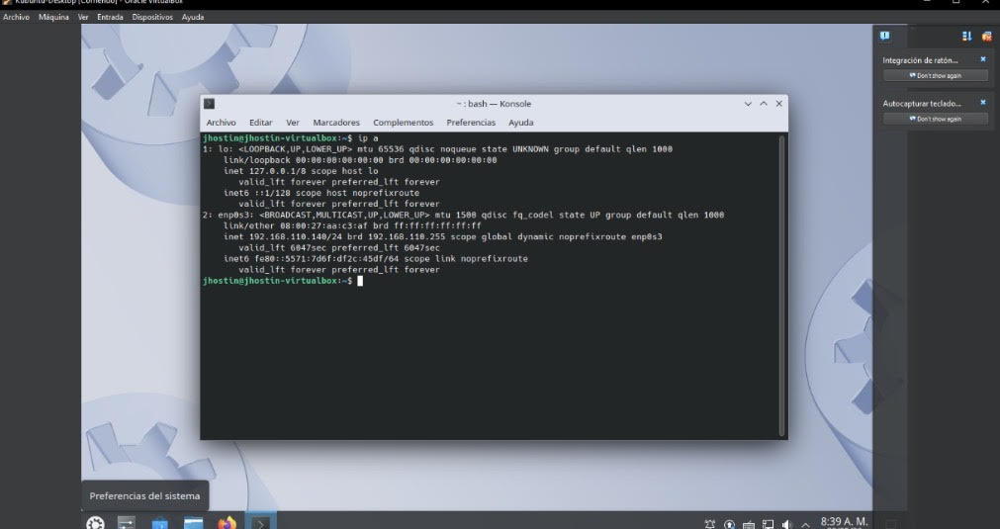
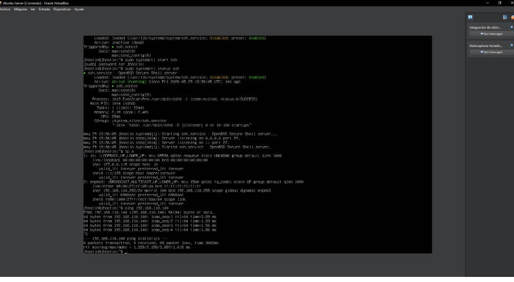
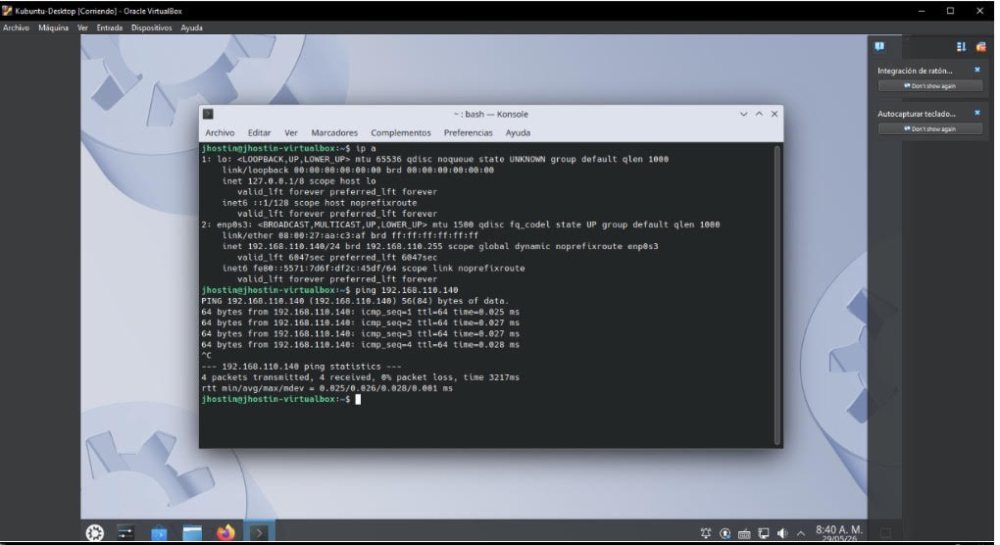
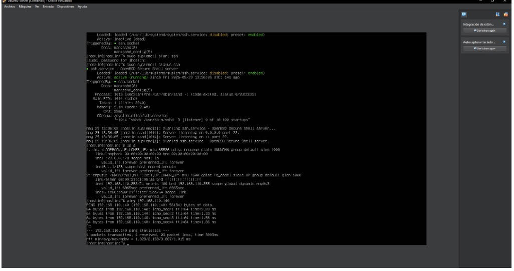
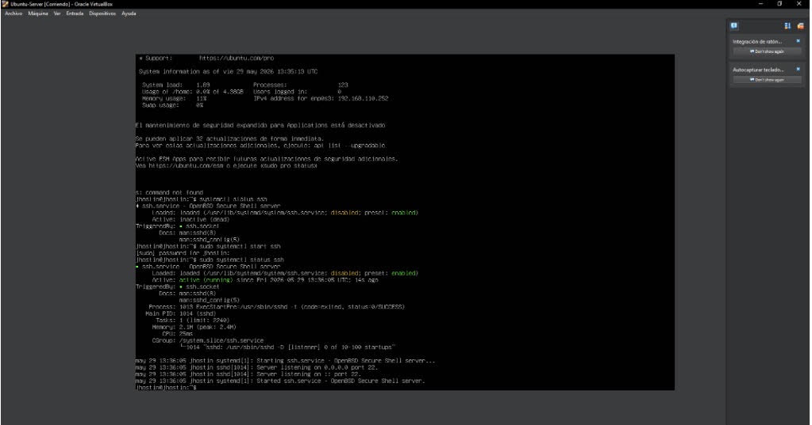
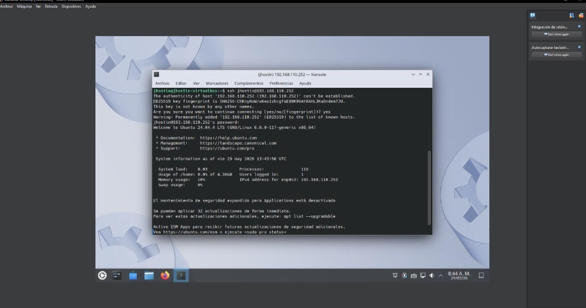

CONFIGURACION RED INTERNA ENTRE AMBAS MAQUINAS DE VIRTUAL BOX, EN CADA CONFIGURACION SE ENTRA A RED Y SE ESCOGE EL ADAPTADOR PUENTE Y PROMISCUOS MODE PERMITIR TODO


VERIFICAR IP EN CADA UNA CON EL COMANDO "ip a"


CONIRMAR QUE LAS MAQUINAS SE VEAN ENTRE SI CON EL COMANDO "ping 192.168.110.140"


CONFIGURAR SSH:CON "systemctl status ssh" VERIFICA QUE ESTA INACTIVA POR LO QUE SE USA "systemctl start ssh" PARA ACTIVARLA

EN DESKTOP USAR EL COMANDO "ssh jhostin@198.168.110.252" PARA CONECTARSE CON EL SERVIDOR

CONEXION CON EL COMANDO "sudo systemctl status ssh" DESDE KUBUNTU DESKTOP Y UBUNTU SERVER